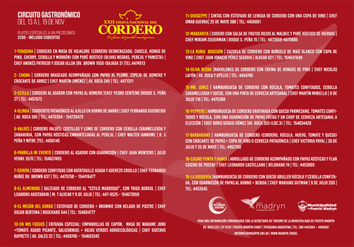

Real Chubut - Agencia de Noticias


PUERTO MADRYN: LA FIESTA DEL CORDERO TENDRÁ SU CIRCUITO GASTRONÓMICO

Del 13 al 19 de noviembre se ofrecerán platos a base de cordero a un valor promocional de 250 pesos con cubiertos incluidos en distintos restaurantes de la ciudad
En el marco de la XXII Fiesta Nacional del Cordero, que se llevará a cabo del 16 al 19 de noviembre en el Complejo Polideportivo Leopoldo Remussi del Club Social y Deportivo Madryn, la Secretaría de Turismo de la Municipalidad de Puerto Madryn convocó a los restaurantes de la ciudad a sumarse al festejo conformando un nuevo circuito gastronómico.
La propuesta plantea un desafió a la creatividad de los Chefs de cada restaurante mediante la elaboración de un plato especial a base de cordero a un precio único de $250 con cubierto incluidos.
De este modo, la gastronomía madrynense saldrá a escena nuevamente del 13 al 19 de noviembre con la participación de los principales establecimientos gastronómicos de la ciudad en una edición especial del circuito gastronómico promocionando y poniendo en valor la cocina local.
En esta oportunidad, se llevará a cabo simultáneamente con nuestra tradicional Fiesta del Cordero, trasladando el espíritu de la misma a toda la ciudad, conjugando además el turismo y la gastronomía, incorporando nuestros platos con un producto tan propio como es el cordero patagónico, no sólo para turistas, sino también para residentes.
Es importante señalar que hubo una significativa convocatoria de los restaurantes que se sumaron a esta nueva edición generando una importante grilla de alternativas a la hora de disfrutar de nuestra gastronomía patagónica.
Los restaurantes adheridos son:
1-YOAQUINA | Cordero en masa de hojaldre (cordero desmenuzado, choclo, hongo de pino, cherry, cebolla y morrón) con puré rústico (olivas negras, perejil y panceta) | Chef Andrés Patricio y Oscar Ulloa |Bv. Brown 1050 (bajada 3) |Tel:4474913
2- CHONA | Cordero braseado acompañado con papas al plomo, espejo de romero y crocante de arroz | Chef Martín Jimenez | Av. Roca 249 | Tel: 4471311
3-ESTELA | Cordero al asador con papas al romero |Chef Pedro Centeno |Roque S. Peña 27 | Tel: 4451573
4-OLINDA | Corderito Patagónico al ajillo en horno de barro | Chef Fernando Guerreiro | Av. Roca 385 | Tel: 4470304 - 154726473
5-VALDÉS | Cordero Valdés: costillas y lomo de cordero con cebolla caramelizada y zanahoria, con papas rústicas enmantecadas al perejil | Chef Walter Iannome | R. S Peña y Mitre |Tel: 4456145
6-PARRILLA MI EVENTO | Cordero al asador con guarnición | Chef Juan Montero | Julio Verne 3570 | Tel: 154627493
7-COIRÓN | Cordero confitado con ratatouille asada y aderezo criollo | Chef Fernando Nuño| Bv. Brown 637 | Tel: 4475758 – 154416477
8-EL ALMENDRO | Salteado de Cordero al "estilo marroquí", con trigo burgol | Chef Lisandro Aristarain | M. T Alvear y 9 de Julio | Tel: 447-0525 - 154673959
9-EL MESÓN DEL GORDO | Estofado de cordero + brownie con helado de postre | Chef Oscar Bertona | Bouchard 544 | Tel: 154604777
10-EN MIS FUEGOS | Entrada especial: Empandillas de Capón, Masa de Wakame Jono +Tomate Asado Picante, Salicornias + Hojas Verdes agroecológicas | Chef Gustavo Rapretti | Av. Gales 32 | Tel: 4458740 – 154603342
11-GIUSSEPPE | Cintas con estofado de lengua de cordero con una copa de vino | Chef Omar Guerra| 25 de Mayo 388 | Tel: 4456891
12-MARGARITA | Codero con salsa de frutos rojos al malbec y puré rústico de hierbas | Chef Miriam Ziegerman | Roque S. Peña 15 | Tel: 4472659-4470885
13-LA RUBIA BODEGÓN | Cazuela de cordero con buñuelo de maíz blanco con copa de vino | Chef Juan Ignacio Pérez Segovia | Alvear 621 | Tel: 154647649
14-OLIVA NEGRA |Raviolones de cordero con crema de hongos de pino | Chef Nicolás Lafón | Av. Roca y Apeleg | Tel: 4454740
15-MR. JONES | Hamburguesa de cordero con rúcula, tomates confitados, cebolla caramelizada y queso, con una pinta de cerveza artesanal | Chef Martín Miniello | 9 de Julio 116 | Tel: 4475368
16-PEPPERS | Hamburguesa de Cordero gratinada con queso parmesano, tomates confitados y rúcula, con una guarnición de papas fritas y un chop de cerveza artesanal a elección | Chef Boris Sergio Gómez |Av. Roca 353 (Loc.3) | Tel: 154834428
17-BARBARIANS | Hamburguesa de cordero (Cordero, rúcula, huevo, tomate y queso) con crocante de papas + Copa de vino o Cerveza Patagónica | Chef Victoria Payal | 28 de Julio y 25 de mayo | Tel: 4452150
18-CASINO PUNTA Y BANCA | Arrollado de Cordero acompañado con papas rústicas y flan casero de postre | Chef Leonardo Castellano | Belgrano 74 | Tel: 4453869
19-LA BOQUERÍA |Hamburguesa de cordero con queso gruller rúcula y cebolla confitada, con guarnición de papas al horno + bebida | Chef Mariano Gutman | 9 de julio 200 | Tel: 4453545